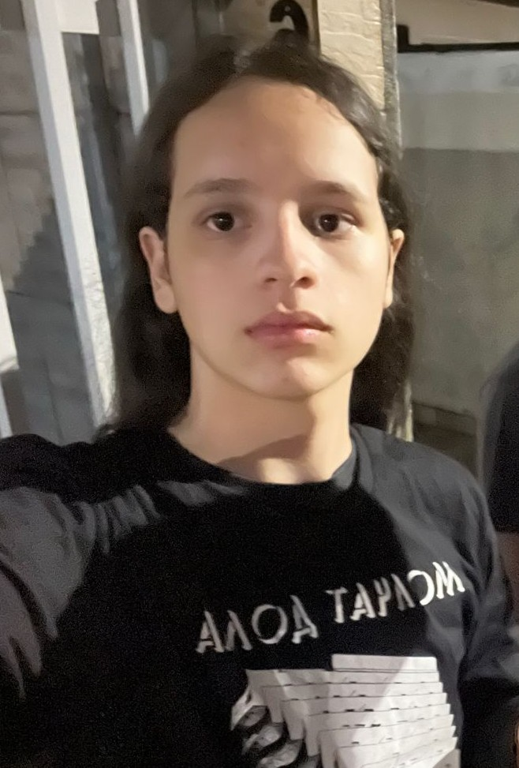

Olá! Me chamo Antonio Vedana. Nasci no dia 14 de junho de 2009, na cidade de Porto Alegre, RS (embora tenha sido criado em Florianópolis desde os meus 3 anos de idade). Atualmente curso o Ensino Médio com Técnico Integrado em Desenvolvimento de Sistemas no SESI-SENAI de Florianópolis. Desde pequeno sempre nutri grande interesse na área de exatas e de tecnologia, o que acabou culminando alguns anos depois no estudo de programação de forma autodidata, que mantenho desde os 12 anos de idade. Programo nas linguagens de programação Python e Javascript e nas linguagens de demarcação e estilização HTML e CSS. Busco me tornar um desenvolvedor back-end ou full-stack, com foco em web development.
Quanto aos meus interesses pessoais, além da programação, sempre me interessei por música; atualmente, mantenho uma (modesta) coleção de vinil e toco guitarra como hobby. Também tenho interesse no aprendizado de novas línguas, sou fluente em Inglês (C2) e tenho proficiência em Esperanto (B2). Gosto de ler sobre política, economia, filosofia e outros assuntos relacionados às ciências humanas. Quanto a minha personalidade, segundo a Tipologia de Myers-Briggs, meu tipo de personalidade é INTP e, segundo o Eneagrama de Personalidade, meu tipo é 5w4.